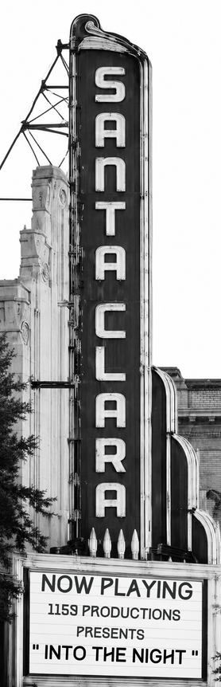

How we got here
A decade in the making.
From a single frustrated resident to a plan adopted by City Council, here's the whole story — the demolition that started it, the volunteers who did the homework, and the people who refused to give up.
The road so far
Sixty years, one comeback.

The downtown is demolished
In the name of urban renewal, the historic core is bulldozed in 1964. The grid, the theater, and the streetcar all disappear.
Reclaiming Our Downtown begins
It begins with one determined resident. In 2015, Rod Dunham founds Reclaiming Our Downtown, refusing to accept that Santa Clara had to be the city without a heart. Linda Mello was one of the people who helped get it off the ground, and Mary Grizzle, Donna West, and Dan Ondrasek teamed up with Rod shortly after. Knocking on doors, filling rooms, and telling the story to anyone who would listen, they turn a handful of frustrated neighbors into an organized movement.
Volunteers do the homework
Thousands of volunteer hours go into surveying neighbors, canvassing, researching, and studying successful downtown restorations across the country. The city runs the official Downtown Precise Plan process — workshops, draft plans, and a full environmental review — but it's the volunteers who make it possible.
The Downtown Community Task Force
The city forms the Downtown Community Task Force (DCTF): nine members, with representatives from The Old Quad, Reclaiming Our Downtown, Santa Clara University, and the Historical and Cultural Commissions. Joined by the nation's best urban planners (WRT, Sargent Town Planning) and economists, they meet for over 150 hours, listening to citizens, landowners, and experts to shape a people friendly, architecturally significant downtown.
The vision gets a face
Dan Ondrasek's rendering shows Franklin Street reborn: the marquee, a streetcar, and cafes full of people. The movement grows past 5,000 members.
City Council adopts the plan
The Downtown Precise Plan and its zoning code become official city policy. The blueprint is now law — the payoff for years of work by Rod, Linda, and every volunteer who showed up.
From paper to pavement
Now projects have to be proposed, approved, and built under the new rules. This is where community pressure matters most, and where you come in.
You're part of the next chapter
Help write what happens next.
The blueprint is approved. What gets built depends on how many citizens and voters keep showing up.